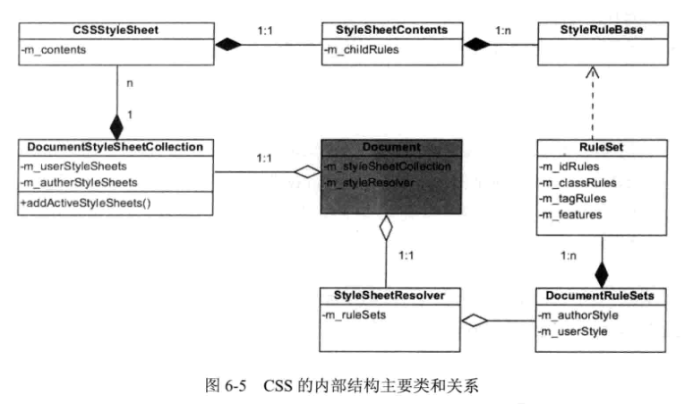
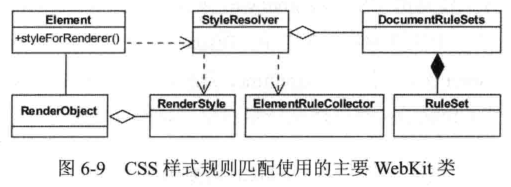
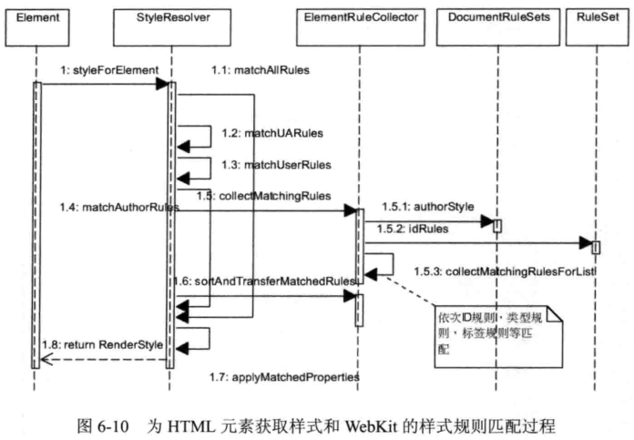

资料来源: 《webkit技术内幕》

结构相关类:
1.StyleRuleBase类: 单个的样式规则(选择器+规则体)
2.StyleSheetContents类: 样式规则集,其成员-m_childRules是一个StyleRuleBase实例的列表,是1:n的数量关系
3.CSSStyleSheet类: 成员-m_contents是一个StyleSheetContents实例,是1:1的数量关系
4.DocumentStyleSheetCollection类: 多种来源的CSSStyleSheet实例(用户样式表,网页作者样式表,默认样式表)的归类列表
5.Document类:
规则匹配处理相关类:
1.RuleSet类: 单个css样式表经css解释器之后的结果集,并且按照关键选择器的类型分类
2.DocumentRuleSets类: 各种来源的样式表的合并(用户样式表/作者样式表/默认样式表)
3.StyleSheetResover类: 规则匹配的主要负责类

样式规则匹配大致过程
1.StyleResover类以ElementRuleCollector类为工具,为指定的元素匹配规则,并将匹配结果保存到RenderStyle对象中,RenderStyle对象由负责该元素渲染的RenderObject对象管理和使用
2.匹配的输入: StyleResover类中保存的css解释器的解释和分类完毕的样式规则
3.匹配用到的工具类: ElementRuleCollector类
4.被匹配对象: 指定html元素
5.匹配结果: 保存至RenderStyle对象并被RenderObject用于元素渲染
规则匹配的详细过程

说明:
1.关键选择器: 样式规则的选择器字符串中的最右边选择器,它是样式规则在解释后分类的依据
2.匹配过程:
3.作者样式匹配详细过程:(默认样式,用户样式的匹配类似)
匹配规则: 从右向左依次匹配选择器
前面我们已经知道解释之后的样式规则是分类存放在对象中的,而为当前元素匹配规则时,也是按id,class,tag,feature顺序依次匹配.
下面我们用伪代码来解释匹配的详细过程:(伪代码不是真正合理的和实际的代码)
1.重要参数
//参数e: 指代被匹配的元素
//重要的变量
var Result=[]; //用于保存完全匹配的结果集2.工具函数
function firstMatch(property,ruleSet){
//将元素的id/class/tag/feature与idRules/classRules/tagRules/featureRules匹配
//将匹配到的规则以数组返回,未匹配到返回空.
}
function getS(rule){
//获取单条rule规则的选择器数组
}
function Match(s,e){
//将选择器s与元素e匹配
//如果成功匹配则返回true,否则返回false
}
function leftMatch(rule,e){ //第一次匹配过后,用于处理结果集中单条规则的匹配的函数(调用Match函数)
var s = getS(rule); //获取单条规则的选择器数组
for(var i=s.length-1;i>=0;i--){ //从右到左依次将选择器与元素e匹配
var flag = Match(s[i],e);
if(!flag){ //一旦某次匹配失败,函数直接返回
return;
}
}
push(Result,rule); //仅当所有选择器都匹配成功,即完全匹配时,才将该条rule添加到Result
}
function ruleMatch(firstmatch,e){ //第一次匹配后的处理函数(调用leftMatch函数)
if(firstmatch为空){ //第一次匹配为空,直接返回
return;
}
for(var i=0;i<=firstMatch.length-1;i++){
leftMatch(firstMatch[i],e); //第一次匹配不为空,对每条匹配到的规则调用leftMatch
}
}3.id,class,tag,feature匹配的函数及调用顺序
//匹配idRules的函数
function idMatch(idRules,e){
var firstmatch = firstMatch(e.id,idRules);
ruleMatch(firstmatch,e);
}
//匹配classRules的函数
function classMatch(classRules,e){
var firstmatch = firstMatch(e.class,classRules);
ruleMatch(firstmatch,e);
}
//匹配tagRules的函数
function tagMatch(tagRules,e){
var firstmatch = firstMatch(e.tag,tagRules);
ruleMatch(firstmatch,e);
}
//匹配featureRules的函数
function featureMatch(featureRules,e){
var firstmatch = firstMatch(e.feature,featureRules);
ruleMatch(firstmatch,e);
}
//函数调用顺序
idMatch(idRules,e);
classMatch(classRules,e);
tagMatch(tagRules,e);
featureMatch(featureRules,e);4.说明
1.选择器字符串的权重(specifishity)
(1)css中的权重模型(I-S-A-B-C)
其中:
I: 指代该规则是否为!important规则
S: 指代该规则是否为内联样式规则
A-B-C: 为内核定义的三类简单选择器
基础部分: A-B-C模型(以webkit为例)
浏览器内核用一个32位二进制数来表示某css规则的权重值,其基础部分的A-B-C模型是指权重计算的三类增量.
说明:
2.CSS规则权重的计算:
2.涉及到作者样式,用户样式,默认样式三种样式来源时的权重规则
一般,网页开发者和大多数用户考虑到的只有作者样式表和默认样式表(例如:用选择器*去掉默认样式中的元素margin和padding),而默认样式表中不含任何内联样式和!important样式.但是如果我们考虑上用户样式,权重规则可能会有一点不和谐的地方:(优先级从大到小)
用户样式!important规则 > 作者样式!important规则 > 内联样式 > 作者样式普通规则 > 用户样式普通规则
上面的优先级链中不包含内联!important规则,是因为一般的!important规则的目的就是为了以外部样式覆盖内联样式.
可见, 在普通规则和!important规则上, 两种样式表的权重情况是不同的.
可能正是这样的不和谐,才使得各大浏览器都在逐渐废除用户样式吧.但是用户样式的实现可以借助浏览器插件间接实现,不过那又是另外一个故事了.
前面说到: 相同属性设置时,高权重覆盖低权重.那么如果两条规则的权重相同时如何决定哪个有效哪个无效呢?
首先,这里的权重相同有两层含义:
那么,权重相同的情况有下面几种:
1.同一外部样式表中的同权重规则
2.不同样式表中的同权重规则(两部分)
3.元素class属性为多个值,且各个值同权重时
css2.1规范指出: 如果两个声明的权重,来源都相同,后指定的生效. 通过@import引入的样式表中的规则被认为位于父样式表自身的所有规则之前.
而我们讨论同权重规则的覆盖,就是对这个后指定的理解与解读:
下面是一些测试代码:
/*测试1: 同一样式表内同权重规则+覆盖规则与class内值先后顺序无关*/
/*html部分:
<div class="a b"></div>
*/
div{
width: 100px;
height: 100px;
border: 1px solid black;
}
.b {
background-color: blue;
}
.a {
background-color: red;
}
/*测试结果: 红色*//*测试2: 不同样式表,相同权重规则*/
/*test1:<link>位于<style>之前*/
/*html部分:
<link rel="stylesheet" href="csstest2.css">
<div class="a"></div>
<style type="text/css">
.a{
background-color: red;
}
</style>
*/
div{
width: 100px;
height: 100px;
border: 1px solid black;
}
.a {
background-color: blue;
}
/*测试结果: 红色*/
/*test2:link位于style之后*/
/*html部分:
<div class="a"></div>
<style type="text/css">
.a{
background-color: red;
}
</style>
<link rel="stylesheet" href="csstest2.css">
*/
div{
width: 100px;
height: 100px;
border: 1px solid black;
}
.a {
background-color: blue;
}
/*测试结果: 蓝色*/
/*test3: ABC覆盖规则*/
/*html部分:
<div class="a"></div>
<style type="text/css">
.a{
background-color: blue;
}
</style>
<link rel="stylesheet" href="csstest2.css">
*/
/*csstest3.css内容
@charset utf-8;
.a {
background-color:yellow;
}
*/
@import "csstest3.css"; /*必须注释掉前面所有的测试内容,否则违反了@import的使用规则*/
div{
width: 100px;
height: 100px;
border: 1px solid black;
}
.a {
background-color: red;
}
/*测试结果:
不作注释: 红色
注释csstest2.css: 黄色
注释csstest2.css和csstest3.css: 蓝色
*/